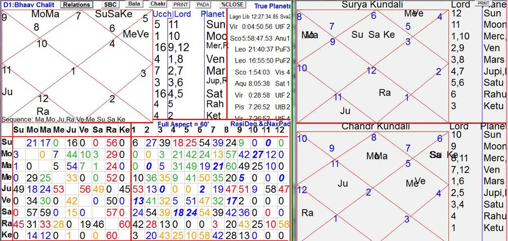
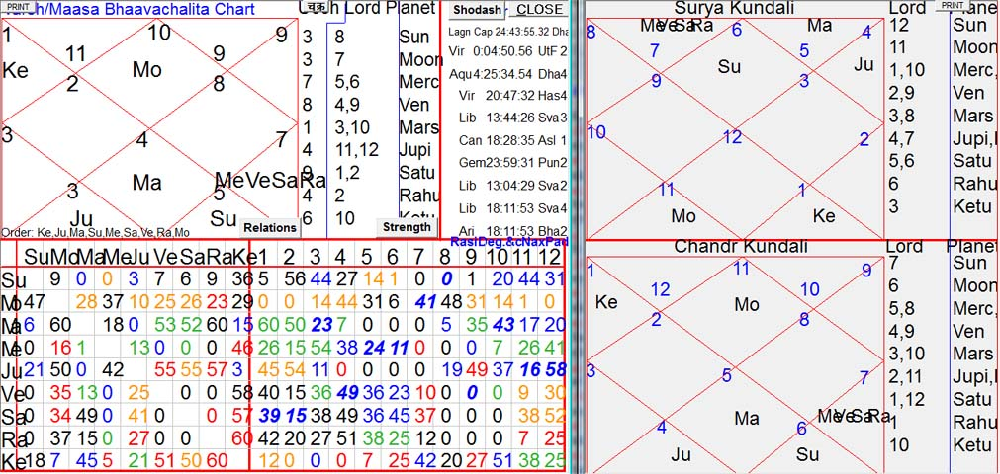
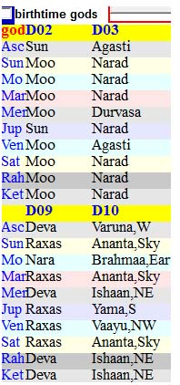
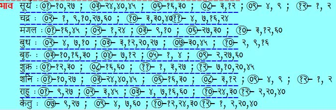
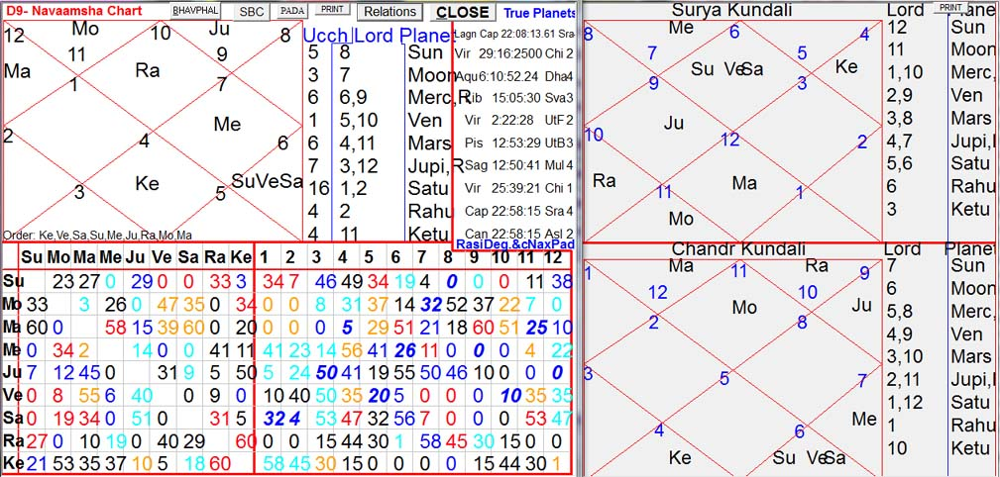
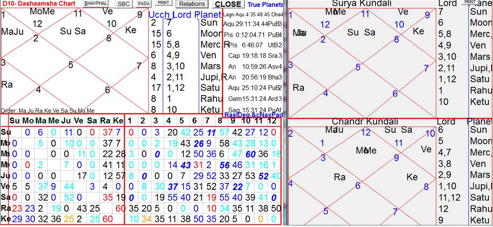

Received Data
Date of Birth :- 17:09:1950
Time of Birth :- 09:35 AM IST (Indian Standard Time). This is the time given by Narendra Modi's elder brother Mr Amrit Modi ji during Lok Sabha campaigns of 2014 (as a witness, ask the then head of dept of Jyotisha in BHU, Varanasi, Dr Chandramouli Upādhyāya). But some astrologers have propagated 10:03 AM, 10:10 AM, 11:00 AM, etc after faulty rectification because they could not correlate events with 9:35 AM. If any given data does not fit with your astrological analysis, you need to learn astrology because data should not be tampered with. I never propose BTR (birth time rectification) beyond one or two minutes. If the given data is too faulty to be used, we should leave the case and should not invent data.
Biography :- Start from here : http://en.wikipedia.org/wiki/Narendra_Modi
Place of Birth :- Vadnagar,Gujarat,India, 23°:47':04" N ; 72°:38':21" E (centre of Vadnagar).
~~~~~~~~~~~~~~~~~~~~~~~~~~~~~
( Click a topic in "Contents" to go to the topic, and then click the back arrow at top left of browser window to return to the table of contents. )
Outline of Methodology
Kundalee Software can be freely downloaded and installed according to links and instructions provided at This Link. After installation, choose its SSS (Suryasiddhantic) mode which is default, which has been used in following and all other case studies at this website. Those who prefer Drik mode (modern physical astronomy) should use JHora, a free software developed by Mr PVR Narasimha Rao (Boston, USA). It is best to install both softwares Kundalee and JHora because both have many marvellous uniques features not found in other softwares, and there is a "JHORA" button in Kundalee's initial start up page which automatically opens JHora (if it is already installed) in its default mode (if you want to use Suryasiddhantic features of JHora in com you shoul select Preferences > Related to Calculation > Set Calculations options as recommended by Vinay Jha , and yhjen Save the Preferences). Suryasiddhantic (SSS) mode has difference in planetary positions with respect to physical astronomy, but astrologically Suryasiddhantic method gives more satisfactory results, provided ancient method of predictive astrology without modifications.
Next point to remember is that D1 (Lagna Chart) is not the Rasi Chart but the Bhāva chart (also called Bhāvachalita chart or Chalita chart). All bhāva-phalas ought to be reckoned with this chart. Rāshi chart should be used to determine all mathematical issues, such as aspects, friendships, relations, lordships, divisional charts, etc. JHora, even in SSS mode, gives bhāvachalita only in tabular data form and its chart of bhāvachalita is faulty which should not be used. The SSS mode of JHora should be used ONLY for list of Yogas and for those dashaa systems which are absent in Kundalee, not for any other purpose.
Third important point is that final astrological conclusion should never be deduced on the basis of any single chart. Most of the astrologers use only D1 and sometimes annual chart and D9. Such shortcuts do not work always. The most precise technique is DPC (Dashā Pravesh Chakra) explained in detail in the case study of Late Indirā Gāndhi at this website, but DPC cannot be used in all cases because now the data required for BTR (birth time rectification) are not preserved and the alternative method is very difficult and requires that the error in birth time must not exceed one or two minutes. Therefore, for general uses, DPC should not be used and the best method is to use Sudarshana Chakra in combination with VPC (five levels of Varsha Pravesha Chakra) and AV (Ashtaka Varga), with emphasis on Vimshottari dashā system based on 360-tithi based lunar year which is default in Kundalee software. No default in Kundalee Software ought to be changed if astrological accuracy is desired.
Ancient method of predictive astrology is illustrated in the case studies.
Birthchart D-1
Nature (svabhāva) and character
Nature (svabhāva) and character of the native is generally seen from lagna (1H or first house) of D1 (first divisional chart or Lagna Kundali LK). But many other things also need to be taken into account which astrologers now neglect. For instance, in Hitlers's chart, we find svagrihi Jupiter in lagna with Moon which gives a highly positive nature to Hitler, which is not the case. Lagna only the physical construction, and planets influencing Lagna impart their psychological traits also to the lagna. But many other things also play their part. For instance, in Hitler's chart we find Saturn in 8H and empty 6H and 7H, which means Hell after death , and Saturn being a malefic killer being 2L + 3L (2L indicates lord of 2H), this road to Hell was to be paved by sinful killing spree. Five dieties in D9 were Rākshasa (Tamahuna) in Hitler's chart, with all the others in Nara (human or Rajaguna) and none in Deva (Sataguna). 8L Moon in lagna also means killer mentality. Since Moon sat in Lagna, LK and CK (Lagna Kundali and Chandra Kundali) coincided and therefore SK (Surya Kundali) was ineffective in Hitler's chart. But in Mr Narendra Modi's chart, all three charts LK, SK and CK need to be evaluated.
Effect of D9's deities on his character and nature has been explained in separate section (click 'Deities' and see D9's birthtime gods).
But 6-7-8 houses were not lorded or infested with Hell going planets, Mars being the strongest of three lords of 6-7-8 houses suggesting martyaloka after death, i.e., sins being equal to virtues. But 12L is combust in Sun which shows some foul acts during Mercury's MD when he was a sanyāsi. D9 is also not good. Hence, he was quite unlike Hitler, yet far from being a true sanyāsi after 1988. But bhāvottama yogas for Mercury and Ketu gave him very strong and genuine strivings towards spirituality as shown in the bhāvottama section below.
Lagna was in Chara sign (rāshi) but its lord Venus was in Sthira sign, and aspects of other planets on lagna also had preponderance of Sthira. Hence, he must have a stable nature. None of his nine planets are in Chara sign of instability. But lagne-lord Venus was 8L and seated in 11H with combust Mercury, and its aspect-relative Jupiter had high and bitter inimical aspect on Lagna which did not augur well for Svabhāva because Jupiter was highly malefic (because of being 3L + 6L) afflicting the house of learning and offsprings. Therefore, he could not get offsprings or real and good disciples, and had no love for real learning or men of learning (this is the reason behind his choice of undergraduate HRD minister who left education for modelling and acting). Aspect of Jupiter and lagnesha Venus indicate religious nature, but Jupiter being malefic makes this religiousity ostentatious and superficial (but during MDs of good planets like Mercury and Ketu, Jupiter could not be effective) ; fortunately, Jupiter's MD will come after he attains 97 years, hence he will be little influenced by malefic effects of Jupiter. Some some traits are permanent in life, such as physical construction as well as basic mental constitution, on which Jupiter's influence will be strongest and permanent.
Dashāphala
Why Wrong Birth-times Were Propagated By Internet Astrologers ?
It is noteworthy that all internet astrologers have rectified Mr Modi's birthtime by +28 minutes to + 85 minutes because they could not correlate chief events of his life with his original birth-time 9:35 am. We will not waste our time on these invented birthtimes, because the original birthtime explains the events beautifully. I am sorry to add that all these internet astrologers propagate their rectified (invented) birthtimes but do not inform the public what original birthtime they had received. Initially when I searched for Mr Modi's birthdata on internet, I found 10:03 am to 11:00, and none of these data explained the real events. I doubted these data and therefore I did not try to write this case study. During election campaign of 2014, Mr Narendra Modi's elder brother Mr Amrit Modi came to Varanasi for campaigning, without informing BJP or even Mr Narendra Modi, and one day he went to Dr Chandramouli Upadhyaya, current head of department of Jyotisha at BHU (Banaras Hindu University), for getting astrological reading for Mr Narendra Modi. Dr Chandramouli Upadhyaya was convinced about the correctness of the birthtime 9:35 provided by Mr Amrit Modi and gave me this data. It took me few days to compare this time with the astrological results of earlier wrong data, and like Dr Chandramouli Upadhyaya I became convinced of the correctness of this data. Now, the question arises why all these internet astrologers destroy original birth-time and propagate wrong data ? They are not dishonest. They sincerely believe they are doing right things. And they sincerely believe that the traditional siddhānta Jyotisha is not worth testing. This so-called "scientific" attitude is the root of such problems. Following analysis shows that traditional methods explain the events and there is no need to invent artificial birthdata.
2014 General Elections
D1's Moon MD started on 30th Dec 2013, and since then Mr Modi's popularity increased day by day fantastically, finally giving him an unprecedented victory in general elections, added with the glory of an abnormally decimated opposition. It can be possible only with a tremendously strong rājayoga. If 11 am birth-time is used with Lahiri Ayanamsha in Drik mode, Moon's MD starts on 28 Nov 2011 when Mr Modi was being opposed by the most powerful politicians of his own party, and Mr Modi came to power at centre during AD of Rahu which had no rājayoga and was bitter enemy of 10H of political power. Yet, some astrologers argued in favour of this birth-time because it had mahāpurusha yoga of Mars with which Moon was conjunct. But this yoga should have started working since Nov 2011 which was not the case, and Rahu's AD in 2014 cannot explain phenomenal election victory. Similarly, other events also falsified this birthdata, whether SSS is used or Drik.
But with SSS (Shri Surya Siddhanta), we find MD and AD of Moon and PD (pratyantara dashā) of Jupiter during Mar 26 to May 4, 2014. By then, elections for 438 Lok Sabhā seats were over, and as results later showed Mr Modi's NDA alliance had already obtained majority in the whole of Lok Sabhā by then, because on 7th and 12th May, BJP won only little less than half of the total 105 seats and even without these seats its victory was already ensured. Hence, Jupiter's PD must have been highly benefic for Mr Modi. Jupiter by itself was malefic, being 3L + 6L, but it was bitterly and highly inimical to four houses : 1, 9, 8, 12, and inimical but without any aspect for 3H and 4H, while it was fast friend of 7, 2, 10 houses with 15% to 32% aspects and lord of 3 and 6 without any effective aspect, besides near total but neutral aspect on 11H. Therefore, Jupiter was good for 10H of political power, 2H of oration, 2H and 11H of money needed for electioneering. Yet, Jupiter needed some different reason for rājayoga because by itself Jupiter has no rājayoga. This reason is explained by a fundamental principle mentioned in Laghu Parāshari : planets give their results during sub-periods of their relatives. Since MD and AD was of Moon, PD of Jupiter should give the results of dashā-lord Moon. Moon's closest relative is Mars but Moons is enemy of Mars and therefore cannot give its benefic fruits to Mars. Next strong relative is Jupiter which has 44' friendly aspect from Moon and gets 18' fast friendly aspect from Jupiter. Next friendly relative of Moon is Venus which gets only 10' friendly aspect from Moon and in return Venus is neutral and not friendly to Moon. Therefore, Moon must give its benefic results only during the sub-period of Jupiter. Moreover, Moon is 10L (lord of 10H of political power).
Now the question arises why a debilitated (neecha) Moon has so strong a rājayoga. A svagrihi Mars in own sign sits with Moon, thus neutralizing its debilitation (neech bhanga). Then, Moon has very strong bhāvottama for following divisionals : 1, 9, 10, 27, 60. Vargottama means a planet sitting in same sign (rāshi) in more than two divisionals, while bhāvottama means a planet sitting in same bhāva of more than two divisionals. Vargottama is based on signs, hence its fruits apply to dashās based on signs, such as Chara Dashā, while bhavottama applies to dashās app;lied to bhāvaphala, such as Vimshottari : but this basic rule is neglected by all astrologers. Bhāvottama Moon in D1 and D10 implies Moon gets the strength equal to exaltation in these two divisionals, and the subject related to D10, namely career, gets the effects. Since this bhāvottama is extended to D9 (dharma, fortune, dharmapatni), D27 (strength) and D60 (all subjects), then Moon becomes super-exalted. Its debilitation is already destroyed by Mars. Hence, Moon must give very very strong rājayoga, and this rājayoga should manifest either during AD (2017 AD) or PD (April 2014) of Jupiter, as shown above.
SC (Sudarshana Chakra) does not change the above conclusions deduced from LK (Lagna Kundali), because in SK (Surya Kundali) Moon is malefic by dint of being 11L sitting in 3H but this is neutralized by CK (Chandra Kundali) in which Moon sits in lagna as 9L. Hence, SK and CK neutralize each other in Moon's case Moon and the results of LK are maintained for SC.
VPC (Varsha Pravesha Chakra)
Now, let us see the VPC (annual chart) for 2014 April-May elections. For less important events ('weak events'), birthchart (including divisionals) and VPC may give contradictory results, which calls for mutual comparison of these charts to find out the prevailing planets and their results, which is a more complicated affair with respect to very important events ('strong events') for which different charts reinforce the results of each other. **Unfortunately, astrologers do not have time and patience for such comparative studies of various charts, and therefore have forgotten this most fundamental method of predictive astrology (Phalita Jyotisha)**. After all, there are many different charts, and if they give different types of results for a single event, why we should not find out the comparative strengths of effective planets in various charts for a given timeframe ?
[ But astrologers pick up only those charts which explain the events, and ignore those charts which do not explain the events : this is sheer dishonesty and unscientific. There must be a consistent methodology, but Drig-Ganita prevents even the best and most experienced Vedic astrologers to find out any consistent method in spite of their individual talents. In 2006 AD, I requested Mr K N Rao on telephone to test Suryasiddhantic method, but he refused, and asked me to convince his disciples first before wasting his time ! I never tried to contact his disciples because I had no need to do so. Correct method would have helped him, not me. Other gurus of internet astrology exhibited similar "scientific" attitude by rejecting to test SSS. Even the maker of JHora Mr PVR Narasimha Rao never carried out a single comparative analysis of Drik versus SSS, and also stuck to his previous phalita habits of evaluating individual charts separately without ever making any comprehensive analysis of all relevant charts for explaining any event. I did not like to name such astrologers by name, but they attack SSS without testing it properly and mislead others with wrong methods, thereby doing a great disservice to Jyotisha. Mr PVR Narasimha Rao wrongly misleads others that he tested SSS and found it to be wrong. Firstly, he did not test SSS properly (he "tested" it before finishing the SSS project, he never used Bhāvachalita, he never compared Drik with SSS in any case study during interactions with me, and he used lop-sided evaluations of single charts without making comprehensive studies. Here, I am showing how a strong event should be explained by all important charts. Election victory of Mr Modi in 2014 is a very very strong event and it must be explained by D1, D10, VPC and AV without distorting given data in the name of horrible amounts of birth time rectification or without twisting phalita methodology to suit one's prejudices. ]
VPC has five levels, each being 12 times less in time than the upper level. The first and uppermost level is annual chart (in Medini Jyotisha, there is a parallel set of five levels of VPC starting with Divya Varsha of 360 human years which give long term trends in world and national histories, I call it Divya VPC or DVPC). The first level can be called VPC-1 or VPC-annual, shown in the picture below for the year beginning on 17 Sep 2013 for Mr Modi. Analysis follows this picture.
VPC-annual has Moon in langa, hence this chart suffices for SC and SK need not be viewed. The event to be analyzed is 2014-elections. 10L Mars is 3L and sits debilitated in 7H, in the sign of Moon and aspected by Moon from lagna. Moon is weak and is controlled by bhaavesha-drishti (lord's aspect) of exalted Saturn which is 1L + 2L in 9H of fortune where its neutral relative Venus has double rāja-yoga : 4L + 9L and in moola-trikona sign, and in bhaavachalita Mercury was there too in its own sign. These three strong planets were all inimical to the weak Moon, hence Moon and its debilitated vassal Mars were completely controlled by exalted Saturn and its neutral relative Venus and fast friendly relative Mercury. 10L Ketu was also controlled by aspects of these powerful planets. Hence, 9H and 10H got the benefits of three powerful benefics.
It is noteworthy that Saturn was exalted throughout during elections, and it was effective in his VPC too. Thus, VPC and Gochara reinforced each other.
VPC-2 (monthly chart) for Apr 14 to May 15 in 2014 has mutual sign exchange relations between 7L + 10L jupiter in lagna and 1L + 4L Mercury in 10H. Jupiter was in neutral sign of Mercury while Mercury was in friendly sign of Jupier but Mercury was debilitated. As a result, Jupiter dominated over 10H and took over rājayoga power or Mercury too. Besides, 8L + 9L Saturn in 5H had similar exchange relation with 5L + 12L Venus in 9H, thereby making the exalted Saturn overpower both 5H of popularity and 9H of fortune and dharma (dharma is not religion, religion is sampradāya or pantha).
Deities
Mr Modi has five planets in Rākshasa in D-9's Deities (see D9's birthtime gods) like Hitler, but three planets are in Deva. Hence, net result is only two planets in Rākshasa while Hitler had net five Rākshasa planets. Nevertheless, Rākshasa tendencies are more than average in his character (average means three Deva, three Nara and three Rākshasa planets, and Lagna in Nara Navāmsha). But during MD (mahā-dashā) of Mercury and Ketu lasting from 1965 to 1988, which had Deva planets in D9, he leaned towards genuine spirituality. But his tamaguni Rākshasa planets prevented him from becoming a full-fledged spiritual person, esp with the onset of Venus and Sun's MD in D1 (1988 to Dec 2013) when he relapsed to tamaguni fold of Kaliyugi politics.
D-2 is noteworthy for having eight planets in Moon's hora, Jupiter being the only planet in Sun's hora. Hora chart is generally used for indicating wealth, but it gives all the results related to 2H, such as voice. For instance, Mr Amitabh Bachchan has exalted Jupiter in 5H of acting as 2L + 11L, and Jupiter was in Moon's hora too, giving him marvellous voice and much wealth. But all other eight planets were in Sun's hora, thereby creating financial problems sometimes leading him to the brink of bankruptcy during their periods. Mr Modi's D2 is just opposite to Mr Bachchan, having eight planets in Moon's hora, giving him oratorial skills to influence the masses and ability to gather financial help for his political activities, although Mr Modi does not have any dhanayoga like Mr Bachchan, excepting the strong bhāvottama of Moon which helped him during Moon's MD.
Deities of D-10 show the directions in which the native gets comparatively more success or failure in career. Ten dikpālas with ten directions are related to D10. In Mr Modi's D10, Moon's direction was Bhoo (Earth) lorded by Brahmā (related to central ground portion in Vāstu-shāstra given to Brahma-sthāna). Therefore, during Moon's MD in D1 starting from end of Dec 2013, Mr Modi's political career and fame spread to all directions without being confined to some particular direction / directions. BJP succeeded in gathering significant votes even in those regions where it was practically absent earlier.
Bhāvottama
Besides the strong Rājayoga of Moon due to Bhāvottama, there are many lesser Bhāvottama yogas too in this chart, as shown in the picture below. He had bhāvottama yoga for 12H (spirituality) of D1 and D20 (including D2 and D40 also) for Ketu, which means during Ketu's MD his spirituality (D20 of upāsanā, and 12H for spirituality or moksha) rose to heights during Ketu's MD.
He had bhāvottama yoga for 3H (parākrama) of D3 (brother and parākrama), D27 (strength), D12 (parents and spirituality) and D20 (spirituality) for Mercury, which means during Mercury's MD he performed austerities (such as giving up salt in foods, living like an ascetic, etc) for spirituality (upāsanā) during Mercury's MD.
Birthchart D-9 (Navamāmsha Varga)
Birthchart D-10 (Dashamāmsha Varga)
Bihar Assembly Elections and Modi's Planets
Uploading screenshots of Kundalee Software here is not only time consuming, it wastes the space allowed in this website too. Hence, I am avoiding pictures displaying charts which anyone can generate using Kundalee Software.
Mr Narendra Modi's current MD is of Moon which has already been explained above. But currently Moon is giving bad results in Rahu's AD because Moon is bitter enemy of Rahu, and according to Laghu Parashari, planets give their their chief fruits during their subs according to relationships with sub-lords.
His current AD is of Rahu which sits in 6H of enemy. Moreover, Rahu's sign-lord is Jupiter which is highly malefic, being 3L + 6L and in enemy sign of Saturn, the latter highly malefic in 12H with malefic Sun.
Moreover, the PD of Saturn is also also highly malefic, running from 13 Oct 2015 to 5 Jan 2016.
Hence, During the entire 10-year long yoga-giver phase of Moon, current AD of Rahu is the worst AD.
SBC (Sarvatobhadra Chakra) shows why Sushil Modi, Shatrughna Sinha, (and Sushma Svaraj, follower of Advani), etc are opposing Narendra Modi overtly or covertly : "S" has SBC-vedha from Rahu. The worst letter is "P" , but fortunately for Modi there is no prominent politician with such a name, although Parvej Musharraf and Pakistan are hostile to Modi. In D10, PD of Rahu is highly benefic, therefore the harm from D-1's Rahu is not 100%.